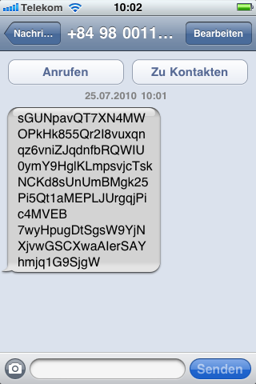

Freitag, 3. Juni 2011
Waterclimb 2011

Freitag, 31. Dezember 2010
So schön kann ein Schneesturm sein
Freitag, 5. November 2010
Skype 5 Mac lesbar machen
Sonntag, 25. Juli 2010
Seltsame SMS aus Vietnam und Indien
Seit gestern habe ich drei SMS aus Vietnam und Indien bekommen, deren Inhalt sehr nach kodierten Daten aussieht. Einen rechten Reim kann ich mir darauf allerdings nicht machen, etwas offensichtliches wie Base64-Encoding ist es nicht - Schadcode eventuell?

(SMS von +84980982541 - Vietnam)

(SMS von +919821882864 - Indien)

(SMS von +84980011608 - Vietnam)
"Seltsame SMS aus Vietnam und Indien" vollständig lesen
Freitag, 23. Juli 2010
Workaround: Prototype 1.6.1 und X-JSON in Firefox
Für ein Web-Frontend frage ich per Ajax.Request von Prototype Daten von einem PHP-Skript ab. Das Skript liefert diese sehr vorschriftsmäßig mit Content-Type "application/json" und mit der Payload im Header "X-JSON" ab. In Firefox 3.6 stellt sich allerdings heraus, dass einige Responses nicht korrekt verarbeitet werden. Die Payload ist valide, keinerlei Fehler in der Response, aber Firefox wirft die Response als fehlerhaft weg. Live HTTP Header zeigt den Request hier erst gar nicht an, Firebug behauptet es wäre keine Response gekommen und XMLHTTPRequest behauptet der HTTP-Statuscode wäre "0".
Allerdings trat das Problem eben nur bei einigen, nicht allen Responses auf: Je nach Eingabe wert und damit Umfang der Response wurden die Daten mal korrekt verarbeitet, mal nicht. In Safari 5 beispielsweise, trat der Fehler überhaupt nicht auf.
Nach einigen Stunden Forschung, hat sich jetzt herausgestellt, dass die Kombination Firefox/Prototype scheinbar manchmal Problem mit JSON im Header hat. Abhilfe schafft eine einfache Ausgabe des JSON mit Content-Type "text/html" und als Dokument, nicht im Header.
Im Request selbst ist damit ebenfalls selbst-parsen angesagt: json = transport.responseText.evalJSON() ersetzt hier das automatische Parsing.

Was ich lieber hätte als einen Gratis-Bumper
Was ich lieber hätte als einen Gratis-Bumper, Apple, ist ein iPhone4. Vorschlag: Ihr liefert sofort und nicht erst im August und ich bezahle den Bumper. Deal or no deal?

Donnerstag, 15. Juli 2010
Löschen reicht nicht, wir müssen auch sperren
Sonntag, 16. Mai 2010
Google, das WLAN und das allgemeine Unverständnis
Montag, 3. Mai 2010
ICQ Spam
Wie mir die täglich mindestens zwei ICQ-Kontaktanfragen von Spammern auf die Nerven gehen, ist kaum zu beschreiben.

Intel SSD? Passt.
Suche
Aktuelle Einträge
So schön kann ein Schneesturm sein
Skype 5 Mac lesbar machen
Gute Frage
Seltsame SMS aus Vietnam und Indien
Workaround: Prototype 1.6.1 und X-JSON in Firefox
Was ich lieber hätte als einen Gratis-Bumper
Löschen reicht nicht, wir müssen auch sperren
Macbook Akkupflege
Google, das WLAN und das allgemeine Unverständnis
Blog abonnieren

Statistiken
Powered by